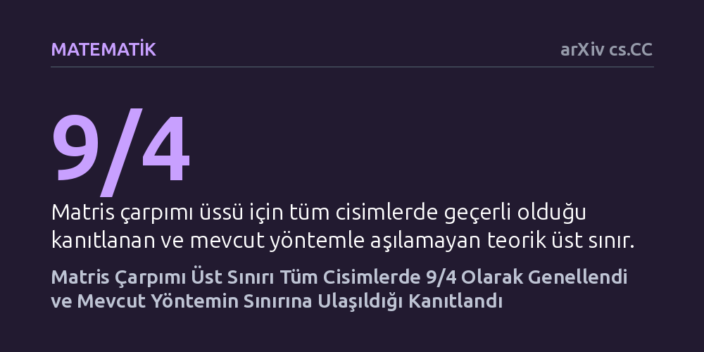

MATEMATIK · arXiv cs.CC · 2026-10-23
Araştırmacılar, OpenAI'ın karmaşık sayılarda matris çarpımı üssü için bulduğu 9/4 üst sınırını tüm cebirsel cisimlere genelledi. Ayrıca polinom tensörleri yaklaşımını inceleyerek mevcut tekniklerle bu sınırın daha fazla iyileştirilemeyeceğini matematiksel olarak kanıtladılar.
Bilgisayar biliminin en temel işlemlerinden biri olan matris çarpımının teorik hız sınırının hangi matematiksel alanlarda geçerli olduğunu netleştirirken, mevcut popüler yöntemin de limitine ulaştığını gösteriyor.

Bilgisayar biliminde iki matrisi birbiriyle çarpmak; yapay zekadan grafik işlemeye, büyük veri analizinden fizik simülasyonlarına kadar sayısız algoritmanın omurgasını oluşturur. Standart okul yöntemiyle n boyutlu iki kare matrisi çarpmak yaklaşık n küp işlem gerektirir. Ancak 1969 yılında Volker Strassen bu işlemin n üzeri 2,81 adımda yapılabileceğini gösterdiğinden bu yana, teorik bilgisayar bilimciler bu üssün (literatürdeki adıyla omega değerinin) kuramsal olarak 2 sınırına ne kadar yaklaştırılabileceğini araştırmaktadır.
Son dönemde OpenAI araştırmacıları, karmaşık sayılar cismi üzerinde polinom çarpmalarını kullanarak matris çarpımı üssünün 9/4'ten (yani 2,25) küçük veya buna eşit olduğunu gösteren yeni bir kuramsal kanıt sundu. Bu gelişme teorik bilgisayar bilimi dünyasında ilgi uyandırsa da iki kritik soruyu açıkta bıraktı: Bu hız sınırı sadece karmaşık sayılarda mı geçerliydi, yoksa bilgisayarların pratikte kullandığı sonlu cisimler dahil tüm sayı sistemlerinde çalışıyor muydu? Ve daha da önemlisi, bu yeni yöntem zorlanarak 2,25 sınırının daha da altına inmek mümkün müydü?
Araştırmacılar laboratuvar deneyi ya da bilgisayar simülasyonu yerine, cebirsel karmaşıklık teorisinin soyut matematiksel kanıtlama yöntemlerine başvurdu. Çalışmanın ana eksenini, polinom çarpım tensörleri arasındaki dejenerasyon eşitsizlikleri ile Strassen'in geliştirdiği asimptotik spektrum ikiliği teorisi oluşturuyor. Tensör dejenerasyonu, karmaşık bir cebirsel yapının sınır koşulları altında daha yalın bir çarpım işlemine dönüştürülebilme kapasitesini modeller.
Yazarlar, OpenAI ekibinin sunduğu kanıt zincirini adım adım parçalara ayırarak karmaşık sayılara bağımlı analitik varsayımları modelledikleri cebirsel geometriden ayıkladı. Tüm adımları soyut cisim aksiyomları üzerinden baştan inşa ederek, yöntemin herhangi bir matematiksel cisim üzerinde hiçbir sapma olmadan çalışmasını sağladılar.
Çalışmanın ortaya koyduğu ilk temel bulgu, kare matris çarpımı üssünün sadece karmaşık sayılarda değil, istisnasız tüm cebirsel cisimler üzerinde 9/4 (2,25) değerini aşamayacağının ispatlanmasıdır. Bu sonuç, kullanılan sayı kümesi ister reel ister sonlu bir cisim olsun, yöntemin sunduğu hız sınırının evrensel geçerliliğe sahip olduğunu kesinleştirdi.
İkinci olarak yazarlar, boyutları eşit olmayan dikdörtgen matrislerin çarpım üssünü de ayrıntılı biçimde haritalandırdı. Boyut parametreleri 1, k ve 1 olan dikdörtgen matrisler için k değeri 0 ile 1/2 arasındayken üssün tam olarak 2 kaldığı, k değeri 1/2'yi aştığında ise 1 + k + 1/(4k) üst sınırının geçerli olduğu kanıtlandı. Genel boyut parametreleri için de tam geçiş koşulları türetilerek dikdörtgen matris çarpımının kuramsal sınırları netleştirildi.
Makalenin teorik açıdan en önemli katkısı, ulaşılan 9/4 sınırının mevcut yaklaşım için nihai bir duvar olduğunu kanıtlamasıdır. Araştırmacılar, operasyonel asimptotik spektrum kavramından türettikleri bir 'operasyonel engel' (operational barrier) teoremi ispatladı. Bu teorem, polinom tensör dejenerasyonlarına dayanan mevcut teknik donanım ve bileşenlerle 9/4 sınırının bir adım bile daha aşağı çekilemeyeceğini gösteriyor.
Bu durum, teorik bilgisayar bilimi için çift taraflı bir mesaj taşıyor: Bir yandan OpenAI'ın geliştirdiği yöntemin sınırlarına kadar optimize edildiği ve kendi kategorisinde eksiksiz çalıştığı tescillendi; diğer yandan matris çarpımı üssünü hayal edilen 2 sınırına daha fazla yaklaştırmak için bu yöntemi zorlamanın fayda getirmeyeceği, bütünüyle yeni matematiksel tekniklerin keşfedilmesi gerektiği anlaşıldı.